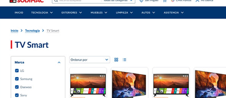
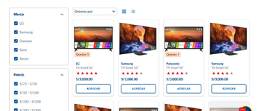
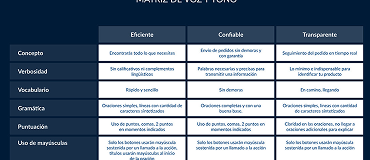
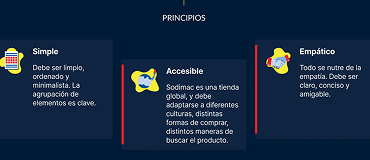

El sitio estaba sobrecargado visualmente, sin una línea gráfica definida ni jerarquía clara. Había múltiples versiones de los mismos componentes, lo que generaba confusión para el usuario y dificultades operativas para los equipos internos.
Se desarrolló un Design System integral con reglas visuales, componentes reutilizables y documentación clara. Esto permitió alinear equipos, reducir la duplicidad de esfuerzos y mejorar la experiencia del usuario en todos los puntos de contacto.
La implementación del Design System trajo una mejora significativa en la coherencia visual y funcional del sitio. Se agilizaron los procesos de diseño y desarrollo, se redujo la duplicación de esfuerzos y se logró una experiencia de usuario más clara y legible. Además, se estableció una base sólida que permite escalar nuevos productos digitales de forma coherente y eficiente.